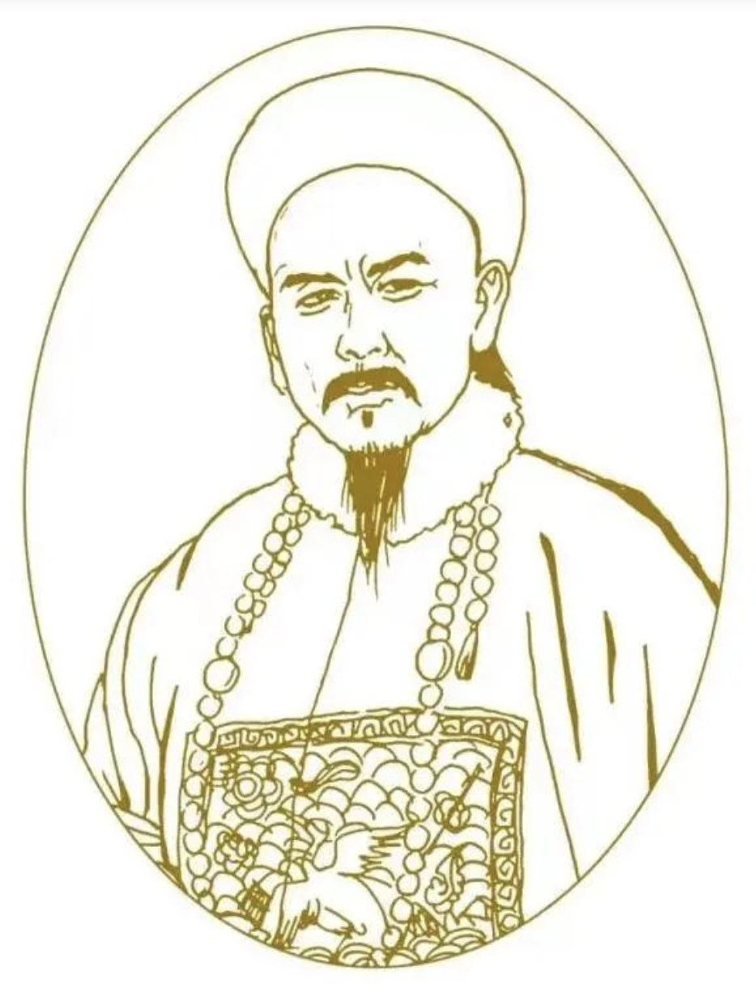
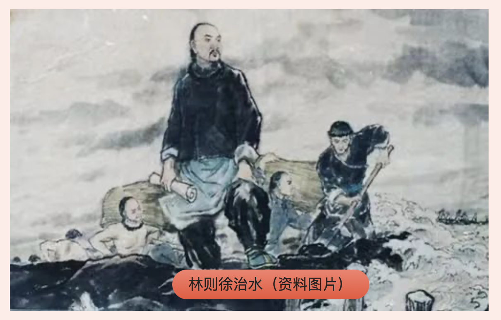

帝国余晖：林则徐与黄河
发布时间: 2023-07-16 4354 次浏览
-
“苟利国家生死以，岂应祸福避趋之。”每当读到这句诗，大部分人的第一反应就是虎门销烟。是的，正因为如此，他被誉为“世界禁毒先驱”。然而，可能大家并不太熟悉的是，林则徐其实也是一位水利专家，曾在中国治黄史上留下了浓墨重彩的一笔。
林则徐（1785年—1850年），字元抚，又字少穆、石麟，福建省侯官（今福州）人。清嘉庆十六年（1811年）进士，嘉庆、道光、咸丰三朝元老。他从政为官四十年，从道员起官至总督，先后担任盐运使、按察使、布政使、河东河道总督、江苏巡抚、湖广总督、钦差大臣、两广总督、云贵总督等职。他提倡经世之学，历经沉浮不改初衷，深受后人敬仰，《清史稿·林则徐传》评价他“所莅治绩皆卓越”。
“以史为镜，可以知兴替；以人为镜，可以明得失。”每个人的一生都是一部历史。林则徐的一生，是为民服务、彪炳千秋的一生。他的诸多优秀品质，是在青少年时期养成的。
林则徐的前半生
艰难困苦，玉汝于成。林则徐出身于文峰林氏，为福州的文化世家。其父林宾日，清嘉庆侯官岁贡生，是当地的教书先生；其母陈帙，为闽县岁贡生陈圣灵之第五女。林则徐的启蒙教育来自父母，以父亲影响最为深远。林宾日思想开明，安贫乐道；其母陈帙心地善良，扶危济困。因家庭子女众多，林家生活一直非常困顿，有时三餐都难以为继。虽处于困境，但由于父母悉心呵护，加之良好的家风家教，林则徐9岁就能写文章，14岁考取秀才。
少年得志，鳌峰求学。林则徐考中秀才之后，即入福建省当时最高的学府——鳌峰书院求学。当时主持书院的山长郑光策是一个进士出身、崇尚“经世致用”思想的封建士大夫。学习期间，林则徐结交了一些有共同志趣的友人，如陈寿祺、梁章钜，二人皆为志向远大、用心于世之人。因此，在书院学习的七年时间里，林则徐树立了经世致用为苍生的人生信念。
书院七年，心系民生。嘉庆九年（1804年），林则徐参加乡试，考中举人。年底，新婚燕尔的他离开家人前往京师参加会试但名落孙山。在此期间，林则徐担任厦门海防同知书记，负责商贩洋船来往、米粮兵饷的记录工作。因能力出众，林则徐受到福建巡抚张师诚的赏识。张师诚将其招入幕府，悉心指点，并鼓励、支持他求取功名。嘉庆十六年（1811年）春，27岁的林则徐第三次参加会试，终于如愿以偿，榜列第七十四名，赐进士出身，入庶常馆，人生道路从此改变。治水生涯也无涯
在林则徐漫长的官宦生涯中，治水几乎贯穿全程，编撰了影响深远的水利专著《畿辅水利议》。他治理浙江和上海的海塘、太湖流域的主要河流，治理运河、黄河、长江。即使在被贬戍伊犁期间，林则徐仍以“宠辱皆忘”的胸怀关注民生，疏浚水源，兴修水利，先后修建了“坎儿井”和“龙口水渠”，新疆百姓称之为“林公井”和“林公渠”。
在治水实践中，他最主要的成就还是治理黄河。在1128年到1855年期间，黄河流路基本上在现在黄河以南的区域摆动，涉及现在河南、山东、安徽、江苏的广大地区，并经常侵袭淮河、运河，成为人们的心腹之患。
一心为民，弹劾权贵。嘉庆二十五年（1820年），林则徐任江南道监察御史。当时，河南南岸河堤缺口，河南巡抚琦善办事不力，出现了大水灾。林则徐不惧琦善满洲贵族背景，向嘉庆帝直奏琦善的无能。因不畏权势、行事果敢、不留情面，导致了同僚的猜忌、冷嘲热讽，为此，林则徐一度对官场心生厌倦。高家堰抢险，忠孝两难全。道光四年（1824年）年底，洪泽湖高家堰十三堡决口，湖水外注，下游不少州县被淹。与洪泽湖相连的淮河，是漕运的必经之道，高家堰决口引起淮河水位下降，造成黄强淮弱，直接影响漕运安全，清廷为之震惊。由于南河河道总督张文浩治水不力，道光皇帝将其撤职，并于次年三月下旨，命正在家乡为母亲守丧的林则徐赶赴南河督修。林则徐深知水患危害巨大，立即赴任。身着素服的林则徐，日夜在高家堰督修，不间断查验，即便大雨天也坚持到现场查看。数月之后，堰工告竣，决口被堵住了。由于成就斐然，道光十一年（1831年），他被晋升为东河河道总督。
大公无私，淡泊名利。从道光十一年（1831年）十月至次年二月，林则徐共担任了一百多天的东河总督。林则徐在任内“绘全河形势于壁，孰险孰夷，一览而得。群吏公牍，不能以虚词进。风气为之一变”。清代黄河防御工程，多为秸料修的“埽工”。他认识到，每年收购秸料乃河工第一弊端，为此，林则徐到任伊始，逐一检查所辖南北两岸十五厅各工段存放的秸料垛，按各厅秸料垛虚实情况，严明赏罚，以除河工积弊。道光帝赞叹道:“向来河工查验料垛，从未有如此认真者。”然而，因触动了官僚集团利益，不久，林则徐被调离东河，但他力除河政腐败的改革精神和坚强意志，却久为后人称道。
帝国余晖与中华崛起
回顾林则徐的一生，他少年得志，仕途顺遂，道光帝八天内连续召见他八次以示恩宠；他曾跌落谷底，完成虎门销烟的壮举，却因内外构陷而充军伊犁。他的一片赤诚、两袖清风、丰功伟绩将永远载入史册。当然，我们也必须看到，由于时代所限，他的治河能力并没有充分发挥出来。道光十一年（1831年），林则徐任东河总督后，深入实地查访探求，刻苦钻研治理黄河的办法，初步形成了挽黄河河道北流，从今山东利津入海的治河方略。然而，因考虑各方阻力太大，未公开提出。在他去世五年后，1855年，黄河在铜瓦厢自行决口北流，河道流路与其设想大体一致。1912年，清帝退位，中国封建帝制结束。
一百五十年后，世殊时异，积贫积弱的屈辱时代早已成为过去。人民治黄七十余年，黄河伏秋大汛岁岁安澜。2019年9月18日，习近平总书记在郑州主持召开黄河流域生态保护和高质量发展座谈会，发出了“让黄河成为造福人民的幸福河”伟大号召。“黄河宁，天下平。”林则徐的治黄事迹和为民情怀，将激励我们集全社会之力，积极投身幸福河建设，投身中华民族伟大复兴事业！
黄河文化旅游宣传平台
联系电话: 17753010787
版权所有：山东大学技术团队
技术支持：山东大学技术团队